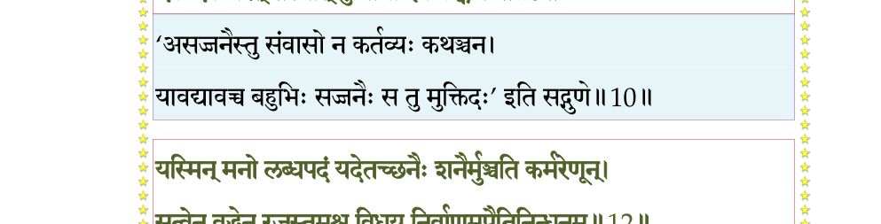
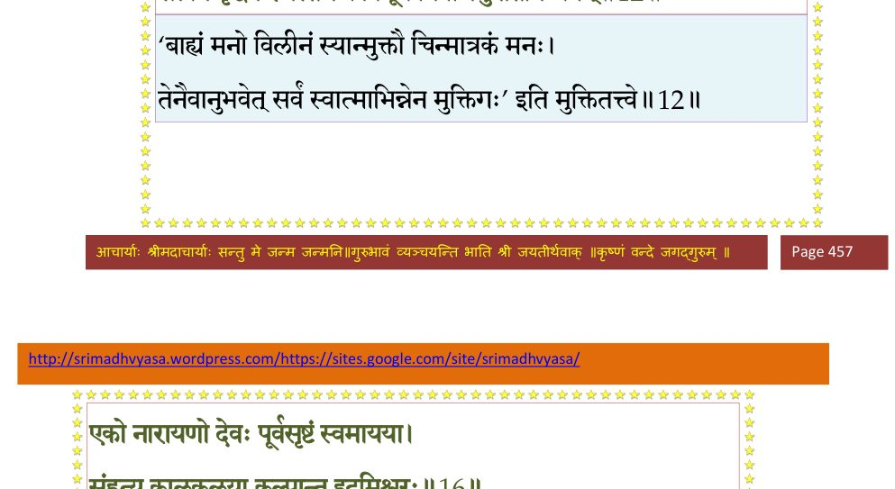
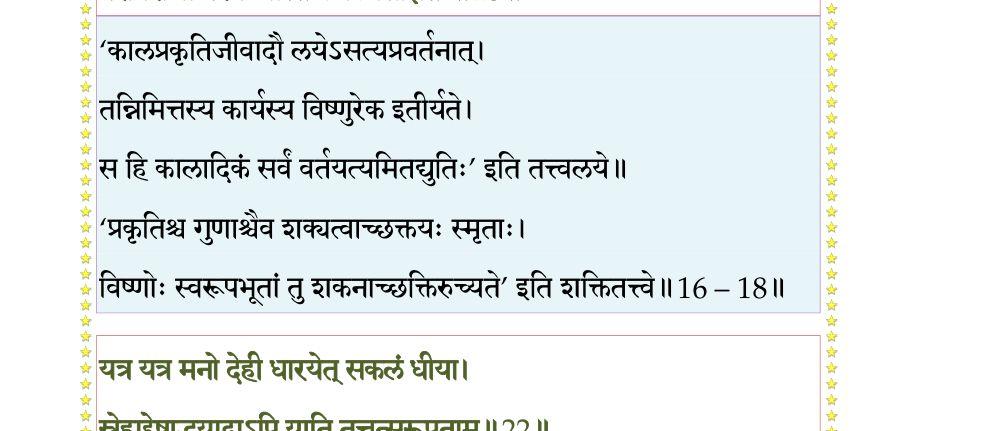
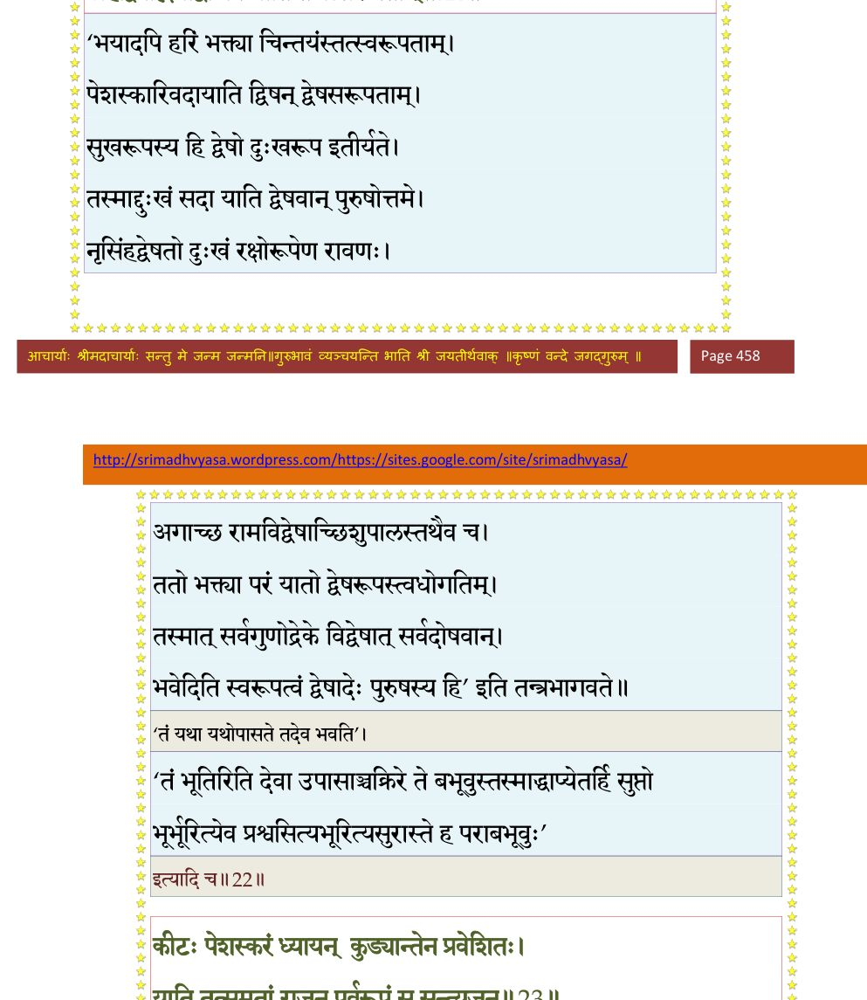
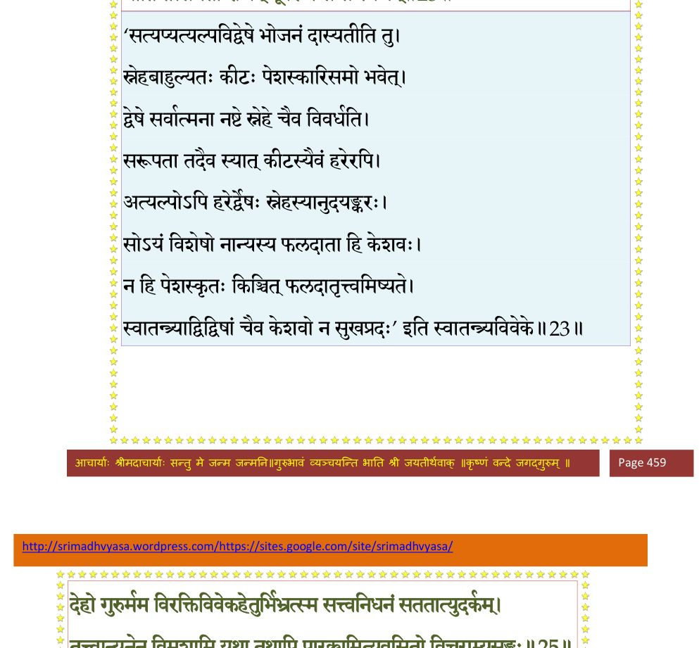
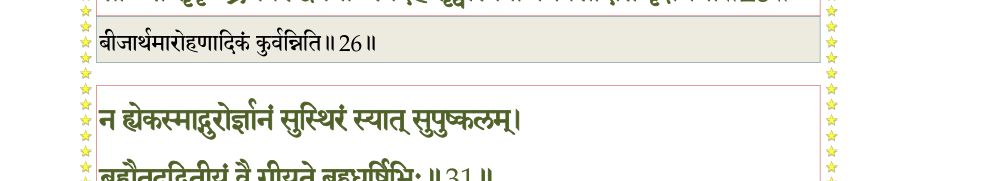
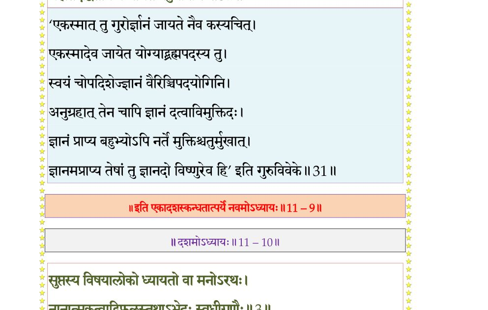

स्कन्ध 11 · अध्याय 9
श्लोक १
ब्राह्मण उवाच–
परिग्रहोऽयं दुःखाय यद्यत् प्रियतमं नृणाम् ।
अन्ततः सुखमाप्नोति तद् विद्वान् यस्त्वकिञ्चिनः।। १ ।।
परिग्रहोऽयं दुःखाय यद्यत् प्रियतमं नृणाम् ।
अन्ततः सुखमाप्नोति तद् विद्वान् यस्त्वकिञ्चिनः।। १ ।।
श्लोक २
सामिषं कुररं जघ्नुर्बलिनो ये निरामिषाः ।
तदामिषं परित्यज्य स सुखं समविन्दत।। २ ।।
तदामिषं परित्यज्य स सुखं समविन्दत।। २ ।।
श्लोक ३
न मे मानावमानौ स्तो न चिन्ता गेहपुत्रिणाम् ।
आत्मक्रीड आत्मरतो विचरामीह बालवत् ।। ३ ।।
आत्मक्रीड आत्मरतो विचरामीह बालवत् ।। ३ ।।
श्लोक ४
द्वावेव चिन्तया मुक्तौ परमानन्द आप्लुतौ ।
यो विमूढो जडो बालो यो गुणेभ्यः परं गतः ।। ४ ।।
यो विमूढो जडो बालो यो गुणेभ्यः परं गतः ।। ४ ।।
श्लोक ५
काचित् कुमारी त्वात्मानं वृण्वानान् (वृणानान्) गृहमागतान् ।
स्वयं तानर्हयामास क्वापि यातेषु बन्धुषु ।। ५ ।।
स्वयं तानर्हयामास क्वापि यातेषु बन्धुषु ।। ५ ।।
श्लोक ६
तेषामभ्यवहारार्थं शालीन् दृषदि पार्थिव ।
अवघ्नन्त्याः प्रकोष्ठस्थाश्चक्रुः शङ्खाः स्वनं महत् ।। ६ ।।
अवघ्नन्त्याः प्रकोष्ठस्थाश्चक्रुः शङ्खाः स्वनं महत् ।। ६ ।।
श्लोक ७
सा तं जुगुप्सितं मत्वा महती व्रीडिता ततः ।
बभञ्जैकैकशः शङ्खान् द्वौ द्वौ पाण्योरशेषयत्।। ७ ।।
बभञ्जैकैकशः शङ्खान् द्वौ द्वौ पाण्योरशेषयत्।। ७ ।।
श्लोक ८
उभयोरप्यभूद् घोषो अवघ्नन्त्याः स्म शङ्खयोः ।
तत्राप्येकं निरभिनदेकस्मान्न भवेत् ध्वनिः।। ८ ।।
तत्राप्येकं निरभिनदेकस्मान्न भवेत् ध्वनिः।। ८ ।।
श्लोक ९
अन्वशिक्षमिमं तस्या उपदेशमरिन्दम ।
लोकाननुचरन्नेताल्लोकतत्वविवित्सया।। ९ ।।
लोकाननुचरन्नेताल्लोकतत्वविवित्सया।। ९ ।।
श्लोक १०
वासो बहूनां कलहो भवेद् वार्ता द्वयोरपि ।
एक एव चरेत् तस्मात् कुमार्या इव कङ्कणः।। १० ।।
एक एव चरेत् तस्मात् कुमार्या इव कङ्कणः।। १० ।।
भागवततात्पर्यनिर्णय

श्लोक ११
मन एकत्र संयुञ्ज्याज्जितश्वासो जितासनः ।
वैराग्याभ्यासयोगेन ध्रियमाणमतन्द्रितः ।। ११ ।।
वैराग्याभ्यासयोगेन ध्रियमाणमतन्द्रितः ।। ११ ।।
श्लोक १२
यस्मिन् मनो लब्धपदं यदेतच्छनैः शनैर्मुञ्चति कर्मरेणून् ।
सत्वेन वृद्धेन रजस्तमश्च विधूय निर्वाणमुपैत्यनिन्धनम् ।। १२ ।।
सत्वेन वृद्धेन रजस्तमश्च विधूय निर्वाणमुपैत्यनिन्धनम् ।। १२ ।।
भागवततात्पर्यनिर्णय

श्लोक १३
तदेवमात्मन्यवरुद्धचित्तो न वेद किञ्चिद् बहिरन्तरं वा ।
यथेषुकारो नृपतिं व्रजन्तमिषौ गतात्मा न ददर्श पार्श्वे ।। १३ ।।
यथेषुकारो नृपतिं व्रजन्तमिषौ गतात्मा न ददर्श पार्श्वे ।। १३ ।।
श्लोक १४
एकचार्यनिकेतः स्यादप्रमत्तो गुहाशयः ।
अलक्षमाण आचारैर्मुनिरेकोऽल्पतोषणः।। १४ ।।
अलक्षमाण आचारैर्मुनिरेकोऽल्पतोषणः।। १४ ।।
श्लोक १५
गृहारम्भो हि दुःखाय विफलश्चाध्रुवात्मनः ।
सर्पः परकृतं वेश्म प्रविश्य सुखमेधते।। १५ ।।
सर्पः परकृतं वेश्म प्रविश्य सुखमेधते।। १५ ।।
श्लोक १६
एको नारायणो देवः पूर्वसृष्टं स्वमायया ।
संहृत्य कालकलया कल्पान्त इदमीश्वरः।। १६ ।।
संहृत्य कालकलया कल्पान्त इदमीश्वरः।। १६ ।।
भागवततात्पर्यनिर्णय
श्लोक १७
एक एवाद्वितीयोऽभूदात्माधारोऽखिलाश्रयः ।
कालेनात्मानुभावेन साम्यं नीतासु शक्तिषु।। १७ ।।
कालेनात्मानुभावेन साम्यं नीतासु शक्तिषु।। १७ ।।
भागवततात्पर्यनिर्णय
श्लोक १८
सत्वादिष्वादिपुरुषः प्रधानपुरुषेश्वरः ।
परावराणां परम आस्ते कैवल्यसंज्ञितः।। १८ ।।
परावराणां परम आस्ते कैवल्यसंज्ञितः।। १८ ।।
भागवततात्पर्यनिर्णय

श्लोक १९
केवलानुभवानन्दसन्दोहो निरुपाधिकः ।
कालेनात्मानुभावेन स्वमायां त्रिगुणात्मिकाम्।। १९ ।।
कालेनात्मानुभावेन स्वमायां त्रिगुणात्मिकाम्।। १९ ।।
श्लोक २०
संक्षोभयन् सृजत्यादौ तया सूत्रमरिन्दम ।
तामाहुस्त्रिगुणां व्यक्तिं सृजतीं विश्वतोमुखम् ।
यस्मिन् प्रोतमिदं विश्वं येन संसरते पुमान्।। २० ।।
तामाहुस्त्रिगुणां व्यक्तिं सृजतीं विश्वतोमुखम् ।
यस्मिन् प्रोतमिदं विश्वं येन संसरते पुमान्।। २० ।।
श्लोक २१
यथोर्णनाभिर्हृदयादूर्णां सन्तत्य वक्त्रतः ।
तया (यथा) विहृत्य भूयस्तां ग्रसत्येवं महेश्वरः।। २१ ।।
तया (यथा) विहृत्य भूयस्तां ग्रसत्येवं महेश्वरः।। २१ ।।
श्लोक २२
यत्र यत्र मनो देही धारयेत् सकलं धिया ।
स्नेहाद् द्वेषाद् भयाद् वापि याति तत्तत्सरूपताम्।। २२ ।।
स्नेहाद् द्वेषाद् भयाद् वापि याति तत्तत्सरूपताम्।। २२ ।।
भागवततात्पर्यनिर्णय

श्लोक २३
कीटः पेशस्करं (पेशस्कृतं) ध्यायन् कुड्यां तेन प्रवेशितः ।
याति तत्साम्यतां राजन् पूर्वरूपमसन्त्यजन्।। २३ ।।
याति तत्साम्यतां राजन् पूर्वरूपमसन्त्यजन्।। २३ ।।
भागवततात्पर्यनिर्णय

श्लोक २४
एवं गुरुभ्य एतेभ्य एषा मे शिक्षिता मतिः ।
स्वात्मोपशिक्षितां बुद्धिं शृणु मे वदतः प्रभो।। २४ ।।
स्वात्मोपशिक्षितां बुद्धिं शृणु मे वदतः प्रभो।। २४ ।।
श्लोक २६
देहो गुरुर्मम विरक्तिविवेकहेतुर्बिभ्रत् स्म सत्वनिधनं सततात्युदर्कम् ।
तत्वान्यनेन विमृशामि यथा तथापि पारक्यमित्यवसितो विचराम्यसङ्गः ।।
जायात्मजार्थपशुभृत्यगृहाप्तवर्गान्
पुष्णाति (यः) यत्प्रियचिकीर्षया वितन्वन् ।
सोऽन्ते सुकृच्छ्रमवरुद्धमनाः स्वदेहं
सृष्ट्वा स्वबीजमवसीदति वृक्षधर्मा।। २६ ।।
तत्वान्यनेन विमृशामि यथा तथापि पारक्यमित्यवसितो विचराम्यसङ्गः ।।
जायात्मजार्थपशुभृत्यगृहाप्तवर्गान्
पुष्णाति (यः) यत्प्रियचिकीर्षया वितन्वन् ।
सोऽन्ते सुकृच्छ्रमवरुद्धमनाः स्वदेहं
सृष्ट्वा स्वबीजमवसीदति वृक्षधर्मा।। २६ ।।
भागवततात्पर्यनिर्णय

श्लोक २७
जिह्वैकतोऽमुमपकर्षति कर्हि तर्षा
शिश्नोऽन्यतस्त्वगुदरं श्रवणं कुतश्चित् ।
घ्राणोऽन्यतश्चपलदृक् क्व च कर्मशक्ति-
र्बह्व्यः सपत्न्य इव गेहपतिं लुनन्ति।। २७ ।।
शिश्नोऽन्यतस्त्वगुदरं श्रवणं कुतश्चित् ।
घ्राणोऽन्यतश्चपलदृक् क्व च कर्मशक्ति-
र्बह्व्यः सपत्न्य इव गेहपतिं लुनन्ति।। २७ ।।
श्लोक २८
सृष्ट्वा पुराणि विविधान्यजयाऽऽत्मशक्त्या
वृक्षान् सरीसृपपशून् खगदंशमत्स्यान् ।
तैस्तैरतुष्टहृदयः पुरुषं विधाय
ब्रह्मावबोधधिषणं मुदमाप देवः।। २८ ।।
वृक्षान् सरीसृपपशून् खगदंशमत्स्यान् ।
तैस्तैरतुष्टहृदयः पुरुषं विधाय
ब्रह्मावबोधधिषणं मुदमाप देवः।। २८ ।।
श्लोक ३०
लब्ध्वा सुदुर्लभमिदं बहुसम्भवान्ते मानुष्यमर्थदमनित्यमपीह धीरः ।
तूर्णं यतेत न पतेदनुमृत्यु यावन्निःश्रेयसाय विषयः खलु सर्वतः स्यात् ।।
एवं सञ्जातवैराग्यो विज्ञानालोक आत्मनि ।
विचरामि महीमेतां मुक्तसङ्गोऽनहङ्कृतिः।। ३० ।।
तूर्णं यतेत न पतेदनुमृत्यु यावन्निःश्रेयसाय विषयः खलु सर्वतः स्यात् ।।
एवं सञ्जातवैराग्यो विज्ञानालोक आत्मनि ।
विचरामि महीमेतां मुक्तसङ्गोऽनहङ्कृतिः।। ३० ।।
श्लोक ३१
न ह्येकस्माद् गुरोर्ज्ञानं सुस्थिरं स्यात् सुपुष्कलम् ।
ब्रह्मैतदद्वितीयं वै गीयते बहुधर्षिभिः।। ३१ ।।
ब्रह्मैतदद्वितीयं वै गीयते बहुधर्षिभिः।। ३१ ।।
भागवततात्पर्यनिर्णय

श्लोक ३२
श्री भगवानुवाच–
इत्युक्त्वा स यदुं विप्रस्तमामन्त्र्याङ्ग धीरधीः ।
वन्दितोऽभ्यर्चितो राज्ञा ययौ प्रीतो यथागतम्।। ३२ ।।
इत्युक्त्वा स यदुं विप्रस्तमामन्त्र्याङ्ग धीरधीः ।
वन्दितोऽभ्यर्चितो राज्ञा ययौ प्रीतो यथागतम्।। ३२ ।।
श्लोक ३३
अवधूतवचः श्रुत्वा सर्वेषां नः स पूर्वजः ।
सर्वसङ्गविनिर्मुक्तः समचित्तो बभूव ह।। ३३ ।।
सर्वसङ्गविनिर्मुक्तः समचित्तो बभूव ह।। ३३ ।।
।। इति श्रीमद्भागवते एकादशस्कन्धे नवमोऽध्यायः ।।